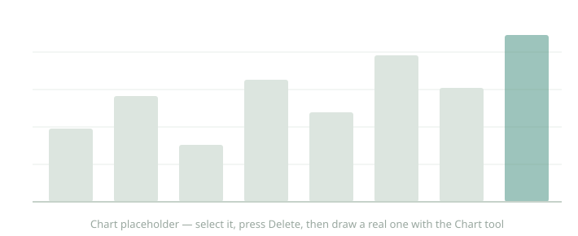

Your report title here
A template-and-scheme scaffold, piloted end to end
AUGUST 2026
The backdrop is a placeholder — swap it for a cover photo (Insert ▸ Image, size to the page, send to back), then delete this note.

Your report title here
A template-and-scheme scaffold, piloted end to end
AUGUST 2026
The backdrop is a placeholder — swap it for a cover photo (Insert ▸ Image, size to the page, send to back), then delete this note.

www.hiappleseed.org
Author: Your Name
Hawaiʻi Appleseed is committed to a more socially and economically just Hawaiʻi, where everyone has genuine opportunities to achieve economic security and fulfill their potential. We change systems to address inequity and foster greater opportunity by conducting data analysis and research to address income inequality, educating policymakers and the public, engaging in collaborative problem solving and coalition building, and advocating for policy and systems change.
The work of Hawaiʻi Appleseed is about people. The issues we work on—housing, food, wages, mobility, the state budget and taxation, and racial and indigenous equity—are important because they ensure people have access to shelter, sustenance, and the means to survive and thrive individually and collectively.
TABLE OF CONTENTS
Introduction — 3
The first section — 5
The second section — 9
Conclusion — 14
Endnotes — 15
Copyright © 20XX Hawaiʻi Appleseed Center for Law & Economic Justice. All rights reserved.
733 Bishop Street, Suite 1180, Honolulu, HI 96813
2 · YOUR REPORT
Executive summary
YOUR FIRST WORDS, IN BOLD CAPITALS, set the stage the way every report in this series opens. Source Sans carries the body; keep paragraphs short and the argument moving.
A second paragraph continues here — replace all of this, or delete the box and lay the page out your own way.
IN TOTAL, THE HEADLINE FINDING GOES HERE — WITH THE NUMBER IN BOLD.

Figure 1. A caption for the chart that goes here — add one with the Chart tool; the series colours are in the swatches.
3 · YOUR REPORT
Your first section
THE SECTION'S FIRST WORDS, IN BOLD CAPITALS, open it the way every page of this report does. Source Sans carries the body over the full text width; keep paragraphs to three or four sentences and the argument moving.
This page is the pattern the rest of the report repeats — headline, hairline, body. Copy its elements onto a new page and replace the words.
A second-level heading, in the topic colour
Under a subheading the body simply continues. Numbers that matter can step out into a pull-quote (page 3 shows one), evidence into a chart with a Figure caption — every device this report uses is already on these pages, styled and movable.
4 · YOUR REPORT
Findings from the data
PILOTED END-TO-END, this page was laid out by the style-guide recipe: addPage to append, then one batch of addTextBox and addShape ops copied from the served patterns.
Every element here is movable, restylable and undoable exactly as if a person had placed it.
5 · TEMPLATE TEST